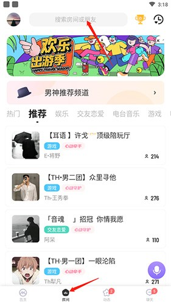
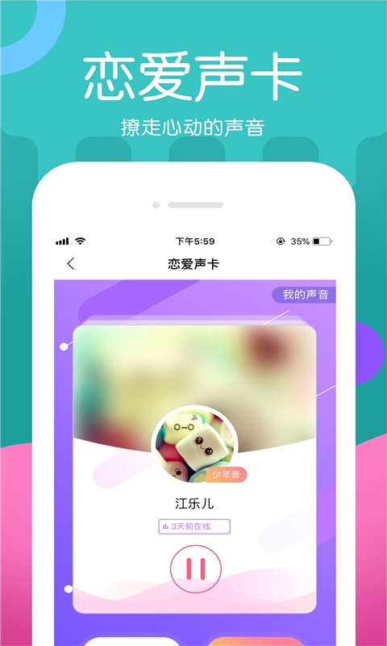

深夜里装了这款语音 App，一周后我想说点实在的
一款主打不露脸的声音社交应用，我用了一周，聊聊它的匹配机制、师徒玩法和那些让人有点意外的设计。
说实话我装 ME 的动机挺朴素的——加班到凌晨三点，朋友圈刷完了，视频号翻到底了，突然想找个陌生人说说话，但又不想露脸。声音社交这个赛道之前试过一两个，体验参差不齐。听说 ME 在这个赛道里口碑还行，去它的官网逛了一圈，抱着试试看的心态从官方下载拿了安装包装上了。
注册流程比我预想的快。手机号收个验证码，填个昵称，选一张头像（可以传照片也可以用系统给的卡通形象），完事。首页就是一个大厅，上面挂着一排分类标签——情感、树洞、游戏、同城……往下滑是广播信息流，用户发的「想找人聊聊天」「今晚开黑缺一个」之类的动态。整体界面走的是深色路线，不花哨，但也谈不上精致，属于"不碍眼"那档。

第一个功能：随机匹配，比想象中有意思
我先点了那个"随机通话"按钮。等了大概六七秒，接通了一个女生，听起来年纪不大，在宿舍里，背景有室友的呼噜声。我们聊了五分钟，从"为啥还不睡"扯到"明天第一节什么课"，然后她那边突然没声了——可能是睡着了，也可能是挂了，反正通话自己断了。
第二次匹配到一个男生，说他在值夜班，是个程序员。他推荐了几个我最近在看的技术博客，然后互道保重就挂了。第三次、第四次、第五次……十次匹配下来，大概有三次聊超过五分钟，两次对方接通就挂（可能手滑），还有一次遇上推销的——开口就要我加微信发优惠券，我直接挂断加举报了。
匹配的算法我没摸透，但感觉不是纯随机。聊过几次之后，推过来的人声音类型越来越接近我喜欢的那一挂。通话界面有个"心动"按钮，还有个"喜欢"按钮，可能这些反馈会喂给算法。说实话这个设计挺让我意外——之前用过的同类应用要么纯随机要么纯付费定向，ME 在中间找了个平衡点。

师徒系统：这是我没想到的
匹配了大概两天之后，我在通话界面上看到一个"师徒"按钮。当时正在跟一个聊得挺投缘的姐姐通话——她说自己玩 ME 三个月了，收过三个徒弟。我脑子一热就点了"拜她为师"，她秒同意。
拜师之后发现这不是个虚头巴脑的称号。师徒页有个"我的师傅"入口，能看到她的在线状态、她的徒弟列表、还有一个出师任务进度条。师傅那边据说也有对应的师傅等级，带徒弟出师越多等级越高。
但我必须说句实在话：这套系统对我这种社恐来说，压力有点大。师傅会时不时来私聊"今天有没有上房""要不要一起打排位"，我有时候加班到太晚根本不想说话，又不好意思直接不回。聊了大概一周我终于在师徒页的问号菜单里找到了"解除师徒关系"的入口——之前翻了好一阵都没找着，后来去ME文档确认了路径才敢下手。点确认的时候我还挺紧张的，怕师傅那边收到通知会尴尬。好在解除之后双方都自由了，我后来再也没跟她匹配上（可能拉黑机制里包含这个？）。
如果让我给师徒系统做个总结：适合真的想长期玩、想找个人带进门的新玩家，但对只想随便聊聊的人来说是个不必要的束缚。而且挑师傅真的很重要——我后来才知道，有些"大师傅"手下挂着几十上百个徒弟，根本顾不过来，那种师傅对你的"带玩"大概率就是发个模板消息。
贵族和 VIP：别冲动消费
用了大概五天，ME 开始给我推 VIP 优惠弹窗，接着是贵族体系的介绍页——说什么子爵有十五项特权里的五项，优先上麦、专属礼物、贵族头像框之类的。
我研究了一下：VIP 是按月订阅的那种"月票"，给你体验加成；贵族是"段位"，靠消费堆上去，越花越多等级越高。说实话普通玩家 VIP 都未必需要，贵族那一堆特权里真正能改变核心体验的几乎没有——你声音不好听、不会聊天，给你十次优先上麦的机会也留不住人。
我见过有人在房间里一口气砸了好几千 ME 币刷礼物上去，脸不红气不喘的。我自己就充过三十块钱试试 ME 币体系——买了个小礼物送给那个程序员朋友，他回了一个，挺有意思的。但再让我多充我是真舍不得。
总结
我现在还在玩 ME，但频率降下来了，大概两三天上一次，每次半小时左右。随机匹配偶尔能碰到聊得来的人，师徒关系早就解除了，贵族和 VIP 也没碰。
适合在 ME 上找到乐趣的人，应该是那种"不想露脸但又想社交"的——社恐但又有点想说话的夜晚，随机匹配确实能解闷。但如果你抱着"在这里找对象"或者"在这里搞事业"的心态来，可能要失望，毕竟它的核心逻辑就是"陌生人聊五分钟，聊得来就加好友继续聊，聊不来就挂了下一个"。
哦对了，还有一件事要提——用了一周，唯一让我觉得有点"嗯？"的地方是，有些东西在 App 里找不到入口，得自己摸索或者翻官方说明才知道怎么做。好在 ME 本身不算复杂，试几次也就摸透了。
这套资料在三个仓库都能拿到：GitHub 上是主维护源，Gitee 上有完整的同步副本，国内访问慢的话可以直接看 GitCode 这边的镜像。